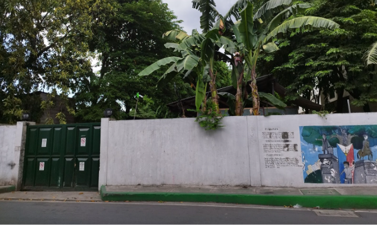
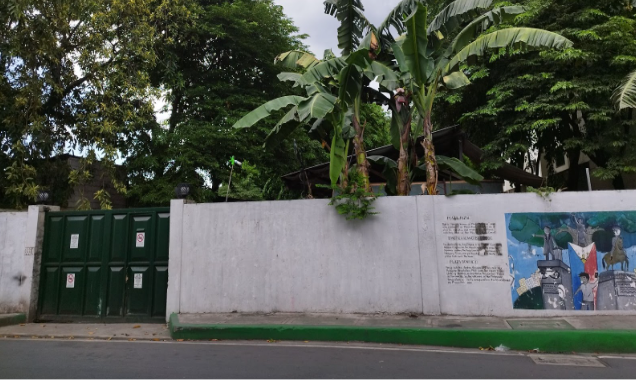
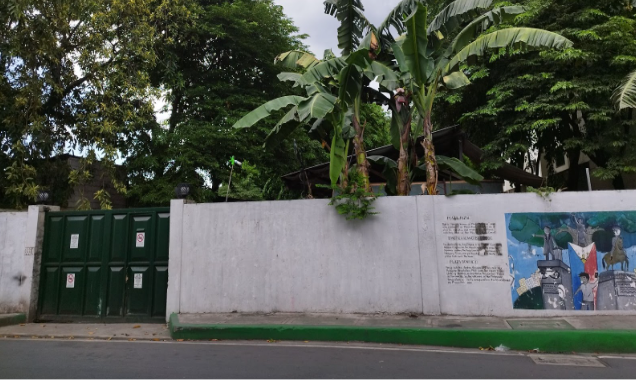

Ang Barangay Maybunga ay tanyag bilang “Ang Umuunlad na Barangay” dahil maraming naglalakihang negosyo o establisimyentong makikita rito.
ANG PINAGMULAN NG BARANGAY
Sa kabilang banda, nagmula ang pangalan ng Barangay Maybunga sa salitang ‘bunga’ sapagkat maraming bunga ang nakapalibot dito. Dagdag pa, karamihan din sa mga matatanda ay ngumunguya ng bunga ng nganga o sa ingles ay betel nut na kulay pula at kadalasang dinudura ng mga gumagamit nito. Ito ang naging batayan para maging pangalan na Barangay na ngayon ay mayaman at kilala dahil sa iba’t ibang establisimyentong matatagpuan dito katulad ng hospital, housing at marami pang iba (Pasig City Hall Library, 2023; Cruz, 2024).
ANG PAGPAPALAYOK SA BARANGAY MAYBUNGA
Noon, isa sa pangunahing kabuhayan ng mga taga-Maybunga ang pagpapalayok. Ito ay ipinakilala noong 1900 o mas maaga pa. At nang sumapit naman ang taong 1950, mas lumakas pa ang industriyang ito na naging dahilan sa paglaki ng ilang mga kilalang palayukan at pasuan katulad ng Trinidad Flower Pot at Irene Glenn Enterprises na pagmamay-ari ng isang Tsino. Sa katunayan, naging tanyag ang dalawang pagawaang ito na nakalikha ng mga magaganda at matitibay na klase ng palayok at paso (Araling Pasig, 2021; Pasig City Hall Library, 2023; Cruz, 2024).
TRINIDAD FLOWER POT O TRINIDAD POTTERY
NOON
Kuhang larawan ni Dr. Nestor Castro

NGAYON
Mga kuhang larawan ni Ruth Angel Ombao
IRENE GLENN ENTERPRISES
NOON
Kuhang larawan ni Dr. Nestor Castro
NGAYON
Mga kuhang larawan ni Ruth Angel Ombao
TUKLAS-KAALAMAN!
Noong Panahon ng mga Amerikano, paggawa ng palayok at paso ang pangunahing hanapbuhay ng mga mamamayan sa lungsod ng Pasig. Sa katunayan, Trinidad Pot Factory at Maybunga Flower Pot ang kauna-unahan at may malaking pagawaan na matatagpuan sa Barangay Maybunga (Pasig Library, 2023).
MGA ORAL NA PANITIKAN HINGGIL SA KULTURA NG PAGPAPALAYOK SA BARANGAY MAYBUNGA
Nang dumating ang mga Tsino sa Barangay Maybunga, nagsimulang sumibol ang noon ay mga tanyag at malalaking pagawaan ng palayok at paso katulad ng Irene Glenn Pottery at Trinidad Pottery. Tunay na masigla at maraming mamimipi ang guminhawa ang buhay dahil dito.
Isa na rito si Dondon na dating taga-lagay ng palamuti sa mga palayok ng Irene Glenn Pottery. Ito ay natutuhan niya sa pamamagitan ng panonood sa kaniyang tiyuhin na nagpipinta rin. Dahil hilig ni Dondon ang pagdidisenyo, nabalin ang atensyon niya sa pag-aaral nito na ‘di kalaunan ay natutuhan at naging hanapbuhay rin niya sa mahabang panahon. Nagsimula ang pagdidisenyo ni Dondon ng mga palayok noong 1980 at nagtapos noong 2000s.
Bukod sa pagdidisenyo, nasaksihan din niya ang paggawa ng palayok sa pagawaang kaniyang pinagsilbihan. Sa proseso nito, ang ilang mga kapuwa trabahador ay kumukuha ng lupa o luwad mula sa bundok. Sa kadahilanang, ang lupa mula rito ay mas malagkit at hindi mabato kumpara sa lupa na galing sa ilog ng Marikina. Kaya ito ang kanilang ginagamit sa pagpapalayok. Sumunod, ito ay gigilingin, didiligan at ibababad nang buong maghapon sa tubig. Pagkatapos ay gigilingin muli hanggang sa makuha ang tamang lapot ng luwad. Para magkorteng palayok ito, gumagamit sila ng molde at ibinababa ang tornohan. Sumunod ay isinasalang sa pugon upang lutuin.
Sa tagal niyang naging tagadisenyo ng mga palayok sa Irene Glenn Pottery, nasaksihan din niya ang paggamit noon ng dayami at dumi ng kalabaw bilang panluto sa mga palayok. Subalit nang mauso ang pugon, ito na ang ginamit sa pagluluto. Panghuli kapag luto na ito, kinukulayan at dinedisenyuhan niya na. Bukod sa Irene Glenn Pottery, siya rin ay nakapagdisenyo sa maliit na palayukan ni Minyang na matatagpuan sa barangay Rosario. Ang mga madalas na palamuti nito ay mga dagat, ribbon at saka nilalagyan ng kulay. Sa pagiging malikhain niya, hindi aakalaing nakarating na ang kaniyang mga nadisenyong palayok sa Pampanga at iba pang karatig na lugar.
Subalit nang magkaroon ng modernisasyon sa noon ay probinsya, unti-unting nagsara ang palayukan at pasuan na kaniyang pinapasukan. Ang dating masiglang industriya sa barangay ay dahan-dahang naglaho. Bagaman labis na naapektuhan ang hanapbuhay ni Dondon, bakas pa rin sa kaniyang mukha ang mga masasayang alaalang minsan ay nagbigay ng kulay sa maraming mamamayan. Lumipas man ang maraming taon, habambuhay mananatili sa puso’t diwa niya ang sining sa palayok.
Bago maging Lungsod ang Pasig, ang Barangay Maybunga na sakop nito ay dating taniman ng mga palay. Kaya naman, maraming magsasaka rito noon. Habang nag-aantay ng ani, nakaugalian na ng mga babaeng magsasaka o asawa na gumawa ng palayok-palayukan. Ito ay mistulang mga laruan o palamuti sa bahay na kanilang ibinebenta sa mga piyesta.
Si Michael ay isang magpapalayok sa Barangay Maybunga. Namana niya ang paggawa nito sa kaniyang ina at kapatid na babae. Sa paggawa ng palayok-palayukan, kumukuha siya ng lupa o luwad. Ito ay kulay abo na kaniyang nakukuha sa ilog ng Marikina. Ibinababad niya ito sa tubig at inilalagay sa sako. Pagkatapos, ilalapag sa sahig at nilalamas o niyayak-yakan gamit ang paa hanggang sa magdikit-dikit ang lupa. Para matiyak na malinis na ito, isinasala niya ito nang husto. Si Michael ay gumagamit ng bistay upang matanggal ang mga ugat o iba pang dumi mula rito. Sa paghuhulma, gumagamit naman siya ng lumpot para makuha ang tamang hugis nito.
Sa tagal ng kanilang pamilya sa industriyang ito, nakagamit din ang kaniyang kapatid ng dumi ng kalabaw na nakukuha sa mga sakahan o palayan bilang panluto sa mga palayok-palayukan na kanilang nagagawa. Nang mauso naman ang pugon, maraming magpapalayok ang gumamit nito. Subalit dahil mausok ang kagamitang ito, uling na lamang ang ginagamit ni Michael upang maluto ito. Pagkatapos ng ganitong proseso, nilalagyan niya ito ng kulay. Noon binubulalo ito para magkaroon ng mapulang kulay. Ngunit sa paglipas ng panahon, ang ganitong pagkukulay ay nag-iba.
Dahil karamihan sa mga magpapalayok sa Barangay ay mga babae, ang madalas na disenyo ng palayok-palayukan na kaniyang nakagisnan at patuloy na ginagawa ay may bulaklak na pinipinturahan niya ng iba’t ibang kulay katulad ng pula (red), kalimbahin (pink), kahel (orange) at luntian (green) upang mas maging maganda sa paningin.
Habang lumalaki si Michael nasaksihan niya na laging ipinamamana sa mga anak na babae ang paggawa ng palayok-palayukan dahil noon naniniwala silang ito ay pambabaeng gawain lamang. Ngunit sa paglipas ng panahon, may mga iilan na rin na itinuro ito sa mga lalaking interesado katulad na lamang niya na matagal nang gumagawa nito. Sa kabilang banda, lumipas man ang panahon hindi pa rin nakalilimutan ni Michael ang pamanang kulturang naging malaking bahagi ng kaniyang buhay. Kaya naman, sariwa pa sa kaniyang mga alaala ang mga kuwento ng nakaraan.
Ang Proseso ng Paggawa ng Palayok
Bidyong kuha at isinaayos ni Angelica Macanas
Nang mawalan siya ng trabaho ito ang naisipan niyang maging negosyo. Sa katunayan, siya at ang kaniyang kapitbahay na lamang ang natitirang gumagawa nito sa Barangay Maybunga.
Palayok-palayukan
Bidyong kuha at isinaayos ni Angelica Macanas
Paggawa ng mga makukulay na palayok-palayukan ang hanapbuhay ni G. Michael sa mahigit na 20 taon. Ang mga ito ay nakarating na sa iba’t ibang lugar katulad ng Nueva Ecija, Antipolo at iba pa.
Noon, maraming pagawaan ng palayok sa Barangay. Nagsimula ito noong taong 1940 na kadalasang ginagawa ng mga kababaihan. Ito ay nagpasalin-salin at naging pangunahing hanapbuhay ng mga mamamayan sa lugar. Dahil kilala at laganap ang ganitong negosyo, maraming sumubok na magtinda nito; May mga naglalako sa mga kalye. Mayroon din namang kumukuha sa mga kilalang pagawaan sa barangay at ibinebenta sa ibang lugar. Subalit ang pagpapalayok ay hindi lamang hanapbuhay, mayroon din itong mas malalim na kahulugan para sa iba.
Si Simplicia Cruz ay dating magpapalayok sa Barangay. Paggawa nito ang paborito niyang libangan. Kapag marami na siyang nalilikhang palayok, siya ay tuwang-tuwa at nagtatayo ng munting silong sa kanilang bahay at doon ibinibenta. Sa proseso ng paglikha ng palayok, ito ay kaniyang nilalamas at niyayapakan gamit ang paa upang makuha ang tamang lapot o timpla nito at tsaka ihuhulma. Pagkatapos, ipinapatuyo o pinapaarawan nang ilang araw hanggang sa maiwan ang kulay nito. Kapag hinog na, iluluto na niya ito sa apoy gamit ang pinagpatong-patong na dayami, kahoy at dumi ng kalabaw. Kapag luto na ang mga palayok, nilalagyan niya ito ng kaniyang initials bilang palatandaan na ito ay gawa at pagmamay-ari niya.
Sa paglipas ng panahon, nagka-edad na si Simplicia. Habang nagkaroon naman ng iba’t ibang propesyon ang kaniyang mga anak. Kaya bago siya mawala, hindi niya naipamana ang pagpapalayok sa mga ito. Subalit bilang paggunita at pag-alala sa paboritong libangan ng kanilang ina, ito ang ginagamit ng mga anak niya sa pagluluto ng mga pagkain. Sa kadahilanang, mas sumasarap ito kapag iniluluto sa palayok. Ang naiwang likhang sining ng kanilang minamahal sa kusina ay sumisimbolo sa kanilang inang minsan ay naging bahagi ng pamanang kulturang ito.
.jpg) 

.jpg)